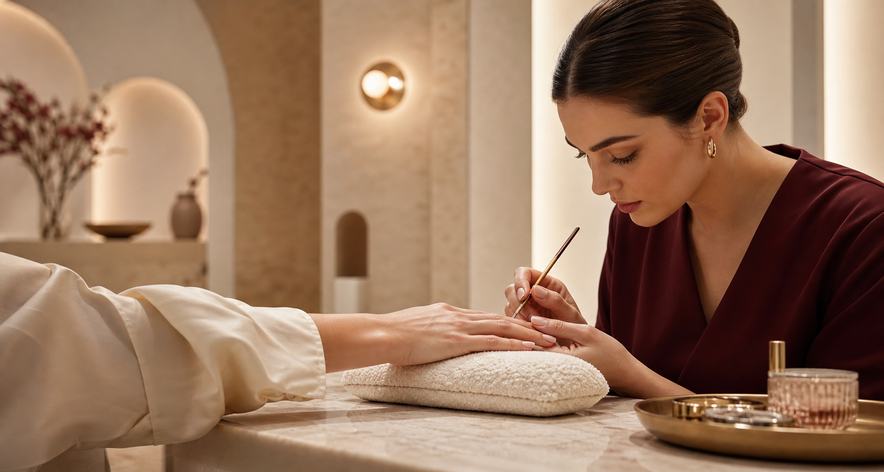
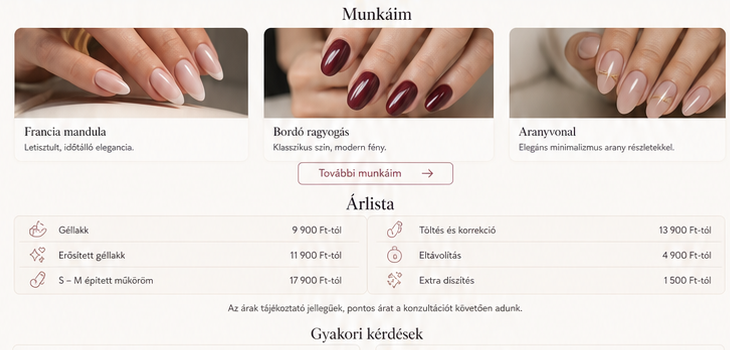

Géllakk és manikűr
Prémium minőség, átlátható folyamat és az adott feladathoz választott professzionális megoldás.
Részletek →
Prémium körömápolás
Személyre szabott manikűr, géllakk és műköröm nyugodt, higiénikus környezetben, prémium anyagokkal.
A minőség látható
Minden projektet személyes igényfelméréssel indítunk, és végig dokumentált, kiszámítható folyamatban valósítunk meg.
01 / Szolgáltatások
Valós igényekre épített szolgáltatások, pontos tájékoztatással és szakértő kivitelezéssel.
Prémium minőség, átlátható folyamat és az adott feladathoz választott professzionális megoldás.
Részletek →Prémium minőség, átlátható folyamat és az adott feladathoz választott professzionális megoldás.
Részletek →Prémium minőség, átlátható folyamat és az adott feladathoz választott professzionális megoldás.
Részletek →Prémium minőség, átlátható folyamat és az adott feladathoz választott professzionális megoldás.
Részletek →Prémium minőség, átlátható folyamat és az adott feladathoz választott professzionális megoldás.
Részletek →Prémium minőség, átlátható folyamat és az adott feladathoz választott professzionális megoldás.
Részletek →02 / Interaktív eredmény
Az előtte–utána nézet látványosan mutatja meg, mennyit számít a gondos szakmai munka.


03 / Folyamat
Egyeztetett, átlátható és dokumentált munkafázis.
Egyeztetett, átlátható és dokumentált munkafázis.
Egyeztetett, átlátható és dokumentált munkafázis.
Egyeztetett, átlátható és dokumentált munkafázis.
04 / Referenciák
Válogatás a szakmánkhoz kapcsolódó megoldások és elkészült részletek hangulatából.


05 / Miért minket?
A jó végeredményhez a technikai tudás mellett tiszta kommunikáció, megbízható anyagok és rendezett munkafolyamat szükséges.
06 / Google értékelések
„Gyönyörű, tartós körmök és igazán nyugodt élmény.”
Kovács Péter · Google értékelés„Mindig pontosan olyan lesz, amit elképzelek.”
Nagy Anna · Google értékelés„Makulátlan tisztaság és elképesztő precizitás.”
Szabó Zoltán · Google értékelés07 / Csomagok
A pontos ár a feladat részleteitől függ. Felmérés után tételes ajánlatot adunk.
08 / GYIK
A pontos válasz az egyedi igényektől függ; rövid egyeztetés után minden részletet átláthatóan összefoglalunk.
A pontos válasz az egyedi igényektől függ; rövid egyeztetés után minden részletet átláthatóan összefoglalunk.
A pontos válasz az egyedi igényektől függ; rövid egyeztetés után minden részletet átláthatóan összefoglalunk.
A pontos válasz az egyedi igényektől függ; rövid egyeztetés után minden részletet átláthatóan összefoglalunk.
09 / Kapcsolat
Írja meg röviden, mire van szüksége. Egy munkanapon belül visszajelzünk.
+36 30 123 4567info@eclat-nail-studio.huBudapest és környéke